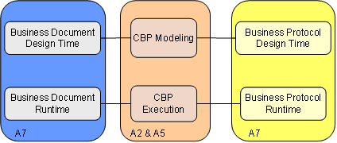
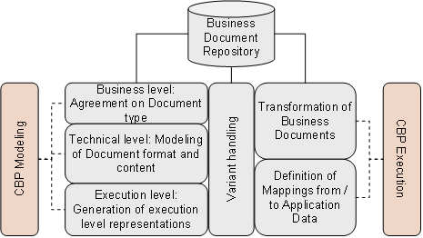
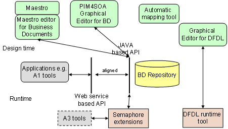

")

Information interoperability
Introduction
In this section we describe the overall architecture of the ATHENA approach to the handling of business documents and protocols in the context of modeling and execution of cross-organizational business processes, which extends the semantics and ontologies approach to information interoperability.
We consider a business document as information entities that are exchanged between and referred to by business partners during the enactment of business processes. Depending on the stakeholder that models a business document; different representation for the business object can be defined:
- on the business level stakeholders will typically talk about business documents in the form of business relevant documents, e.g., a purchase order
- on the execution level stakeholders will agree on XML messages that are exchanged and whose payload contains the business documents
The following figure illustrates on a very high level the main building blocks of the overall architecture.

Design-time architecture for business documents
This section describes the elements of the design time architecture for business documents.

Modeling of business documents is closely linked to the modeling of the cross-organizational business processes defining the interaction between business partners. Thus, we also have to consider the different modeling levels as they are contained in the business process modeling framework. At business level the content of the business document is determined. The requirements are formulated from a business perspective and form the general structure of the business document. Through an assembly-based approach, components are utilized to construct concrete business documents from smaller components or singular items. The detailed instantiation of these items (e.g., “title”) by assignment of further attributes (e.g., to provide semantics in form of a reference to an ontology) or by the restriction of the assigned data types is part of the technical level of business documents. The specification of the business document in a certain schema (e.g., UBL or OAGIS) in a certain syntax (e.g., XML or UN/EDIFACT) wrapped in business messages constitutes the execution level of the business document specification.
Business document and mapping tools
The approach is supported by a number of tools that complement the tools business process modeling and execution that have been developed in ATHENA. The figure below gives an overview of the different solutions and highlights their relationships.
